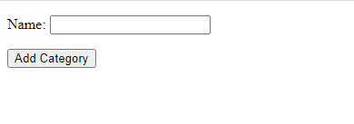

Add Data to Database:
In this lesson, we will be covering all previous lesson concepts in practice. Firstly navigate to http://127.0.0.1:8000/todo_app/add-category/ in browser.
Browser: Category Item List (http://127.0.0.1:8000/todo_app/add-category/)

Now we will create two forms first for inserting Category in database and second for adding Items in into
our database with Category reference included.
Create a python file named forms.py in todo_app directory. Open todo_app/forms.py and add following code:
todo_app/forms.py
from .models import Category, Item
from django import forms
class CategoryAddForm(forms.ModelForm):
class Meta:
model = Category
fields = ['name'] # we will be adding the pub_date in the view to show form data is manipulated in view.
class ItemAddForm(forms.ModelForm):
class Meta:
model = Item
fields = '__all__' # __all__ means we need to add all fields of model in form as well.
Now that we have created the form classes now we will create view that will handle the forms.
Open todo_app/views.py and add following code:
todo_app/views.py
from .forms import CategoryAddForm, ItemAddForm # Import the form classes we created
from django.utils import timezone # import timezone to add datetime in Category model
def addCategory(request):
if request.method == 'POST': # Firstly check the type of request if the request is POST it means user has submitted the form.
form = CategoryAddForm(request.POST) # get the POST data from request and pass it to form instance.
if form.is_valid(): # check if data posted by user is valid or not.
category = form.save(commit=False) #.save() method creates an instance of the model specified in Form class
# we used commit=False it means it will only create Object of Category but will not save it in database.
category.pub_date = timezone.now() # add current datetime in category object
category.save() #save the category in database
return redirect('index')
else:
# if the request type is not POST create an empty instance of form and return it in context.
form = CategoryAddForm()
return render(request, 'add_category.html', {'form': form})
def addItem(request):
if request.method == 'POST':
form = ItemAddForm(request.POST)
if form.is_valid():
form.save()
return redirect('index')
else:
form = ItemAddForm()
return render(request, 'add_item.html', {'form': form})The form handling views are also ready. Now create two HTML files in todo_app/templates/todo_app directory with name
add_category.html for adding Category objects and add_item.html to adding items objects in database:
todo_app/templates/todo_app/add_category.html
<form method="post" action="">
{% csrf_token %}
{{ form.as_p }}
<input type="submit" value="Add Category">
</form>
Now open add_item.html and add following:
todo_app/templates/todo_app/add_category.html
<form method="post" action="">
{% csrf_token %}
{{ form.as_p }}
<input type="submit" value="Add Item">
</form>
Until now we have created the form classes, templates and handling views for those forms. Now we
are going to add mapping URLs in todo_app/urls.py and add following urls in urlpatterns list
todo_app/urls.py
path('add-category/', views.addCategory, name='addCategory'),
path('add-item/', views.addItem, name='addItem'),
Now run server and hit browser at http://127.0.0.1:8000/todo_app/add-category/ fill the form and click on Add
Category button and the Category will be added.